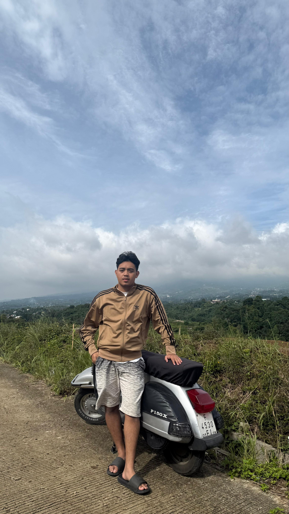

Hello, my name is Rifik. I am an Information Systems student and currently work as a Network Operation Center responsible for ensuring that application services and bank connections run smoothly.
Bachelor's Degree, Information System
Computer network Engineering
Monitoring application services and bank connections.
Changing the application maintenance status on uptime kuma if there is an application that is down.
Internet activation for retail customers and dedicated customers.
Server monitoring via The Dude.
Checking inputs on the OLT when there is a mass internet disruption using SecureCRT or MobaXterm.
Responsible for ensuring that the internet and computer networks are functioning properly so that CPNS exam participants can complete the exam smoothly.
Conducting routine checks on the internet network and computer device.
Email: rivansyahputra16@gmail.com
Instagram: rifik.kai